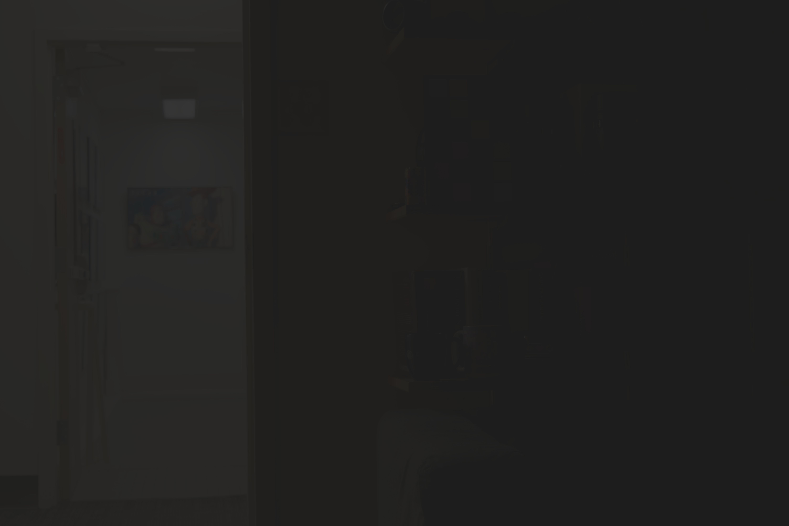
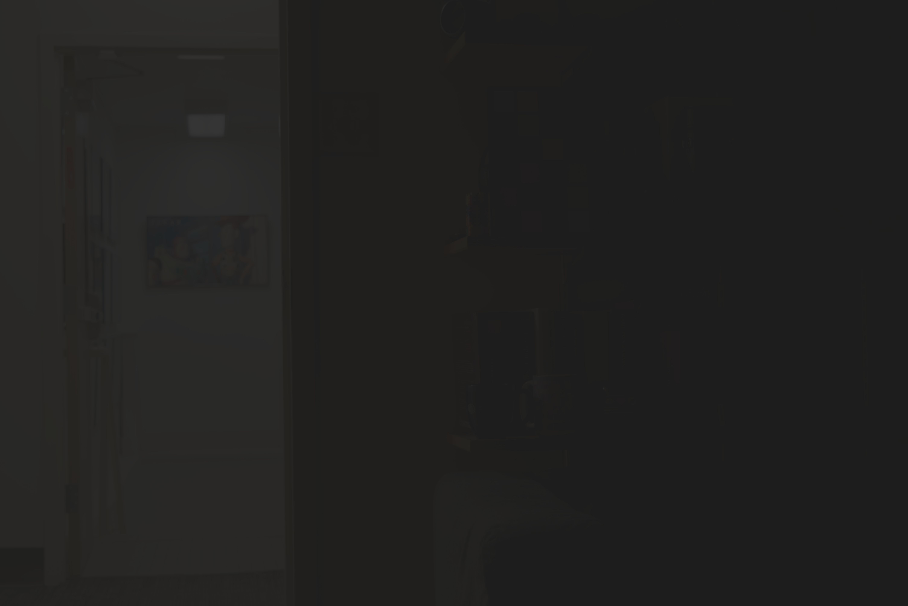

Linearize Rendered Image
We will work with two different types of images.
The first is the .nef RAW format directly from the digital camera,
and the second type is the .jpg which is rendered from the RAW image.
While RAW images can be directly used for stacking, rendered images should be linearized.
So, first for a linear image, we would simply load it with the following rawpy library.
K = 16
raw_image = {}
for k in range(K):
raw = rawpy.imread(f'./data/exposure{k+1}.nef')
raw_image[k] = raw.postprocess(use_camera_wb=True,
no_auto_bright=True,
half_size=False,
output_color=rawpy.ColorSpace.sRGB,
output_bps=8).astype(np.float32)
raw_image[k] = raw_image[k] / 255
However, in the case of .jpg images, we need to linearize the image with the method by Debevec and Malic.
for k in range(K):
rendered_image[k] = cv2.cvtColor(cv2.imread(f'./data/exposure{k+1}.jpg'), cv2.COLOR_BGR2RGB).astype(np.float32)
exposure = {k: math.pow(2, k)/2048 for k in raw_image.keys()}
# tent
weight = lambda x: np.clip(np.where(x >(255//2) , 2 * (1 - x/255), 2*x/255), 0.01/255, 0.99/255)
sample_locations = random.sample(list(np.ndindex((H, W))), N)
print('Solving for response curve...')
g = {}
for c in range(C):
A = scipy.sparse.lil_matrix((N*K + 255, N + 256))
b = np.zeros((N*K + 255, 1), np.float32)
_row = 0
for i, (h,w) in enumerate(sample_locations):
for k in range(K):
z_ijk = rendered_image[k][h,w,c]
w_ijk = weight(z_ijk)
A[_row, z_ijk] = w_ijk
A[_row, 256 + i] = -w_ijk
b[_row, 0] = w_ijk * np.log(exposure[k])
_row += 1
A[_row, 255//2] = 1
_row += 1
for _g in range(1, 255):
w_k = weight(_g)
A[_row, _g-1] = -w_k * LAMBDA
A[_row, _g] = 2*w_k * LAMBDA
A[_row, _g+1] = -w_k * LAMBDA
_row += 1
x = linalg.lsqr(A, b, atol=1e-07, btol=1e-07,)[0]
g[c] = x[0:256]
map = lambda x, l: np.exp(l[x])
print('Concatenating to linear image...')
linear_image = {}
for k in raw_image.keys():
linear_image[k] = np.stack([
map(raw_image[k][:,:,0].astype(np.uint8), g[0]),
map(raw_image[k][:,:,1].astype(np.uint8), g[1]),
map(raw_image[k][:,:,2].astype(np.uint8), g[2])], axis=2)
This gives us a response curve like the following.
Merging Exposure Stacks
Now that we have obtained a linearized image regardless of the initial file format, we will merge these exposure stacks to a single HDR image. The mergeing process is quite simple and requires adding pixels values from different exposure stacks. We can use linear merging and the logarithmic merging with the following lines.


.jpg format.
Given a mask of the source image and the desired location in the target image, we first resize the
Then we obtain the boundary region using the cv2.findContours function and subtract the regions that overlap with the mask.
In this way, we can identify the source image region and the neighboring pixels.
linear_num, log_num, denom = 0, 0, 0
for k in linear_image.keys():
w_ldr = weight(raw_image[k])
denom += w_ldr
linear_num += w_ldr * linear_image[k] / exposure[k]
log_num += w_ldr * (linear_image[k] - np.log(exposure[k]))
hdr_linear = linear_num / denom
hdr_log = np.exp(log_num / denom)
cv2.imwrite('1_linear_hdr.hdr', np.stack([hdr_linear[:,:,2],
hdr_linear[:,:,1],
hdr_linear[:,:,0]], axis=-1))
cv2.imwrite('1_log_hdr.hdr', np.stack([hdr_log[:,:,2],
hdr_log[:,:,1],
hdr_log[:,:,0]], axis=-1))
# uniform
weight = lambda x: 1.0
# tent
weight = lambda x: np.clip(np.where(x >(255//2) , 2 * (1 - x/255), 2*x/255), 0.01/255, 0.99/255)


 

Top-left : RAW image linear tonemapping with tent weighting
Top-right: RAW image linear tonemapping with uniform weighting
Bottom-left : RAW image logarithmic tonemapping with tent weighting
Bottom-right : RAW image logarithmic tonemapping with uniform weighting


Top-left : Rendered image linear tonemapping with tent weighting
Top-right: Rendered image linear tonemapping with uniform weighting
Bottom-left : Rendered image logarithmic tonemapping with tent weighting
Bottom-right : Rendered image logarithmic tonemapping with uniform weighting
Tonemapping
To visualize the HDR images, we perform tonemapping on the HDR images. We will try out two different types of tonemapping, the photographic tonemapping and the one using bilateral filtering. We will use the linear HDR image for all the experiments.
The first type of tonemapping, the photographic tonemapping, can be done in both the RGB and luminance domain with the following code. For the luminance domain, I calculated how much the values are scaled and applied that value in the RGB image.


The second type of tonemapping is the tonemapping using bilateral filters. The following lines produce a tonemapped image following the methods by Durand and Dorsey.